This week's assignment is to make something BIG. And I designed a standing work table using solidworks and cut it on the Shop bot CNC at our lab
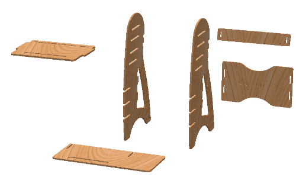
Mine was more of a computer based job, where in I used to sit for most of the day, which adversly affected my back over a period of time. I was more careful then, and also started to explore more working postures. As a designer I initially made my own laptop stand out of packaging card board at work place itself. And this elevated the height of my laptop so that I could sit on a more upright position. I am now using this for more than a year, while I am sitting and working.
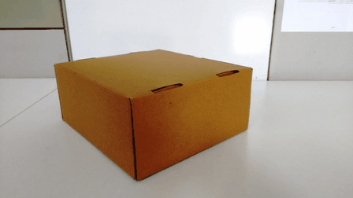
I also explored some options for standing and working so that I could change my posture. For this regard I took a discarded tea table, and placed it in on top of my work desk. This setup worked but was a kind of a jugaad solution. Also I was not able to use a separate keyboard. So when the assignment of the week came, the standing laptop table topped my list.
I used Solidworks to make the design. I made the different [parts first and then assembled them to see if everything is in order.
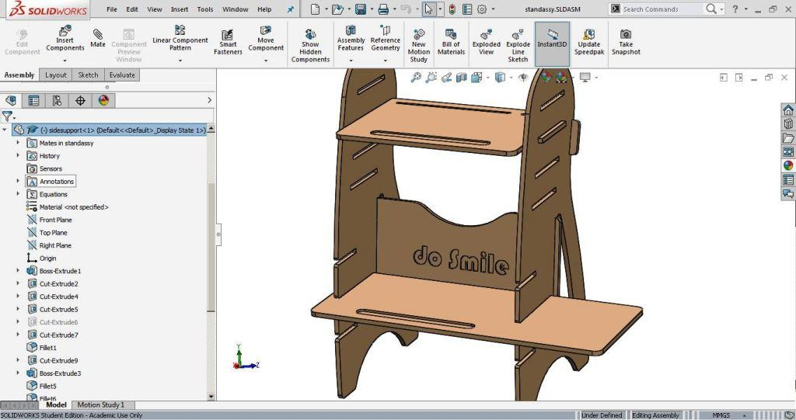
The process to be followed for cutting could be summarized as follows.
After making the solidworks design files, I exported the dxf of each and every part. I nested the dxf using Rhino, and then exported a final DXF with all the parts inside.
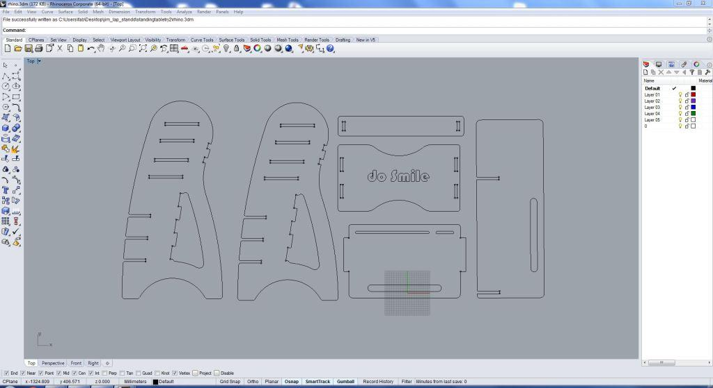
Few useful tutorials on the usage of shopbot could be found in the following links
wiki.fablab.is...How_to_use_the_Shopbot
The cutting is given in the following order, First engraving of the text then the edge holes and then the pockets and the inner cuts, and finally the outer profile cut.
The DXF is then imported into the shopbot vcarve software. This is the application where we generate the toolpaths for cutting. The various settings used for generating the tool paths are available in following image. (Need to change the images using the small arrows below).
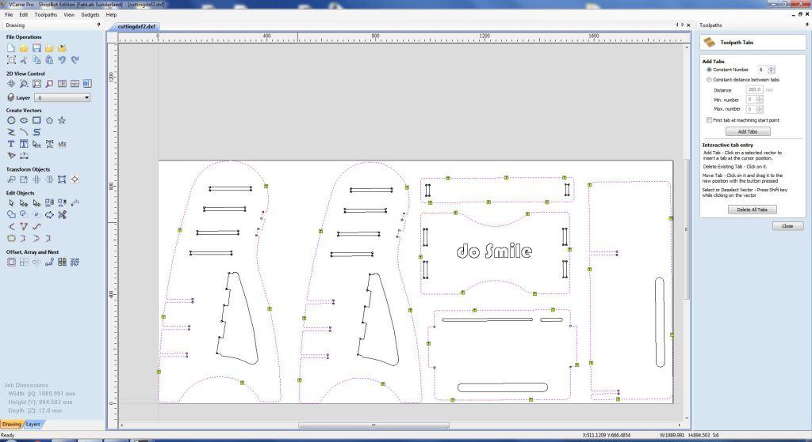
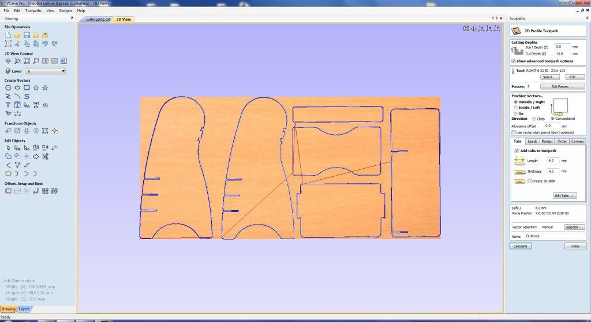
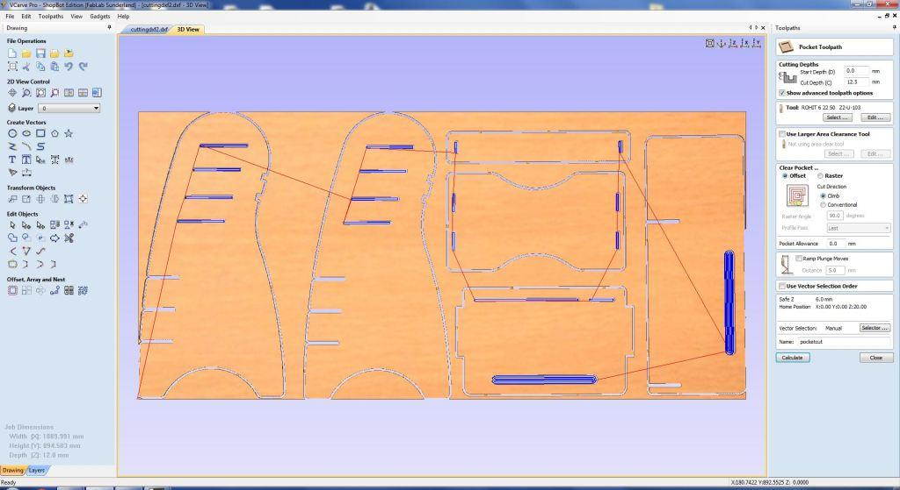
First we need to place the object firmly to the workbench. A sacrificial layer is used, and its advisable to screw the work on to the sacrificial layer. After setting up the plywood (i used 12mm), we need to set the orgins. First we need to setup the X, and Y orgins. Its a good practice to move the head to the absolute orgin and then to move to the desired work orgins. Later we need setup the Z orgin using the provoded plate. Its a good practice to note down the X,Y orgins. I have used a engraving tool and a milling tool. And Z orgin need to be set after every tool change.
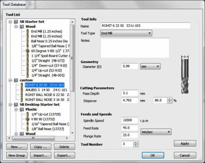
The engraving if the text is done first, and then the tool is changed to the 6mm bit, and then the holes, inner profiles and outer profiles are cut in order. 12000RPM was set as the cutting speed.
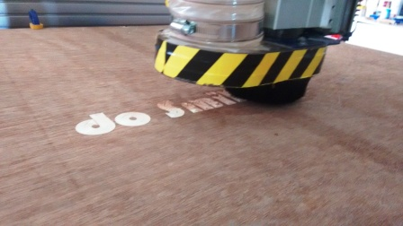
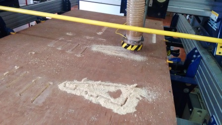
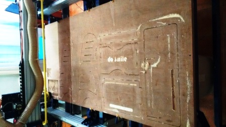
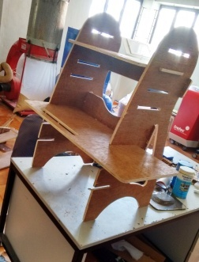
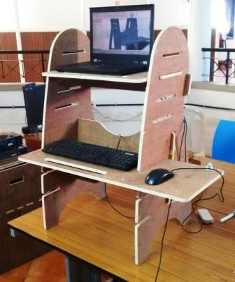
I was able to design and make the stand as part of the assignment. I also got good knowledge on using the shopbot as part of the process. I was in a hurry for making the design, so many of the possible design improvements were not evident at first. The main thing I should have considered is making the tolerances bit more loose, to aid in the assembly, but a little filing helped with that. Also later I thoought it would be a nice idea to incoperated few storage areas on the stand. Also the top plate could have been designed in such a way that it could also be inserted from front, for easy adjustment of height. This stand is made without using any fastners, and so could be assembled and dissambled with the help of a hammer/mallet. This too was a happening week, with the job done, and lots of plans,ideas pouring in for the the application of the new tools and technique learned.
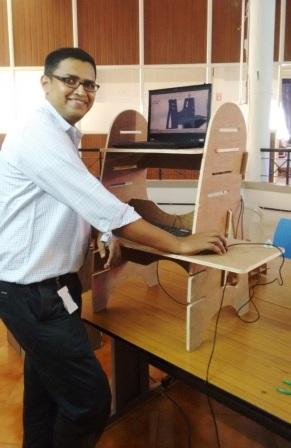
The key learning of this week is the understanding of usage of the shopbot, the various operations including setting-up work piece, setting orgin, setting the feed rates and spindle speed, different cutting options, usage of shopbot vcarve software, different tool bits, the safety precautions etc. So this week was able to get used with this versatile tool and skills that could help me make almost anything
The orginal design files created as part this week's assignment is available via the link below.